Meine VIPs
Meine VIPs sind zwei Personen: Madeleine L'Engle und Michael Jackson.
Michael Jackson: Michael Jackson kann gut singen und gut tanzen. Meine Lieblingslieder sind „Earth Song“ und „They Don't Really Care About Us“. „Smooth Criminal“ ist auch gut. Michael Jackson ist mein VIP seit meinem sechsten Lebensjahr.
Madeleine L'Engle: Mein Lieblingsbuch ist „A Wrinkle in Time“. Die Autorin ist Madeleine L'Engle. Sie hat „A Wind in the Door“ und „Many Waters“ geschrieben. Die Bücher sind gut.
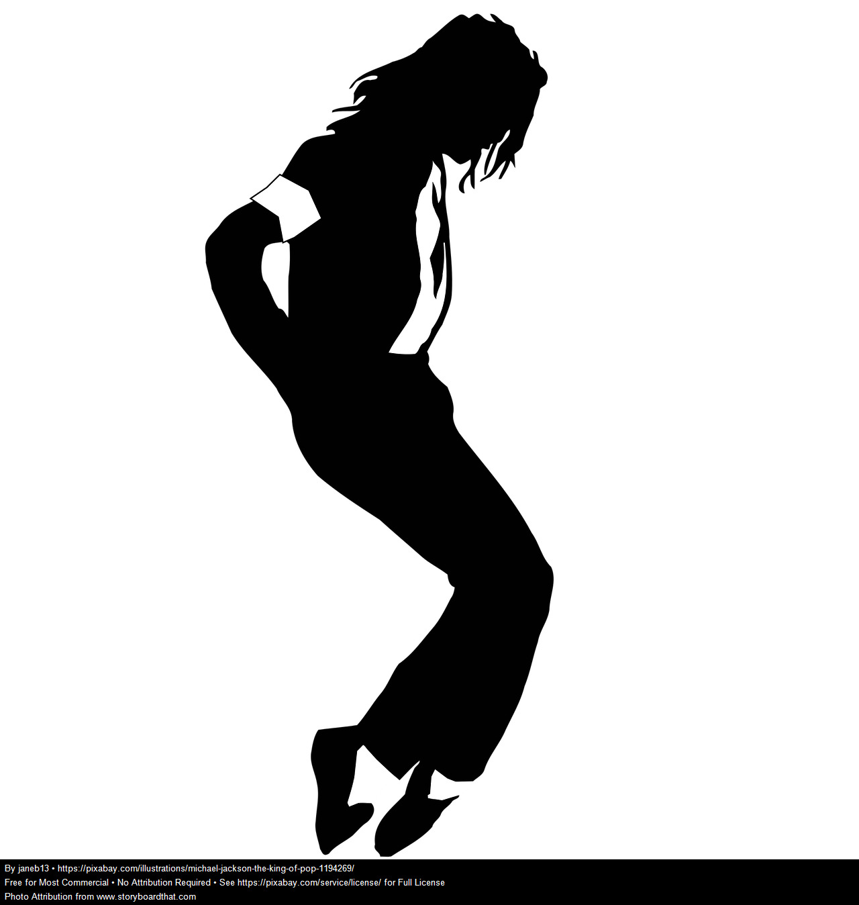
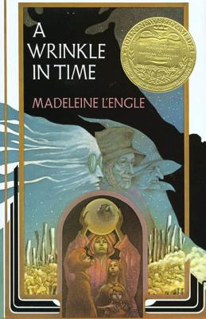
Quelle für das Foto von Madeleine L'Engle: Hachette Book Group.
Meine Wohnung
Ich wohne in einer Wohnung. Die Wohnung hat zwei Schlafzimmer, eine Küche, ein Wohnzimmer und ein Badezimmer. Ich wohne mit meinem Mitbewohner. Wir haben eine Terrasse. Wir haben keine Waschmaschine. Ich möchte in einem Haus wohnen, weil ein Haus größer ist. Ich möchte eine Waschmaschine und einen Garten haben. Mein Traumhaus hat fünf Zimmer, zum Beispiel ein Arbeitszimmer, ein Wohnzimmer und ein Spielzimmer.
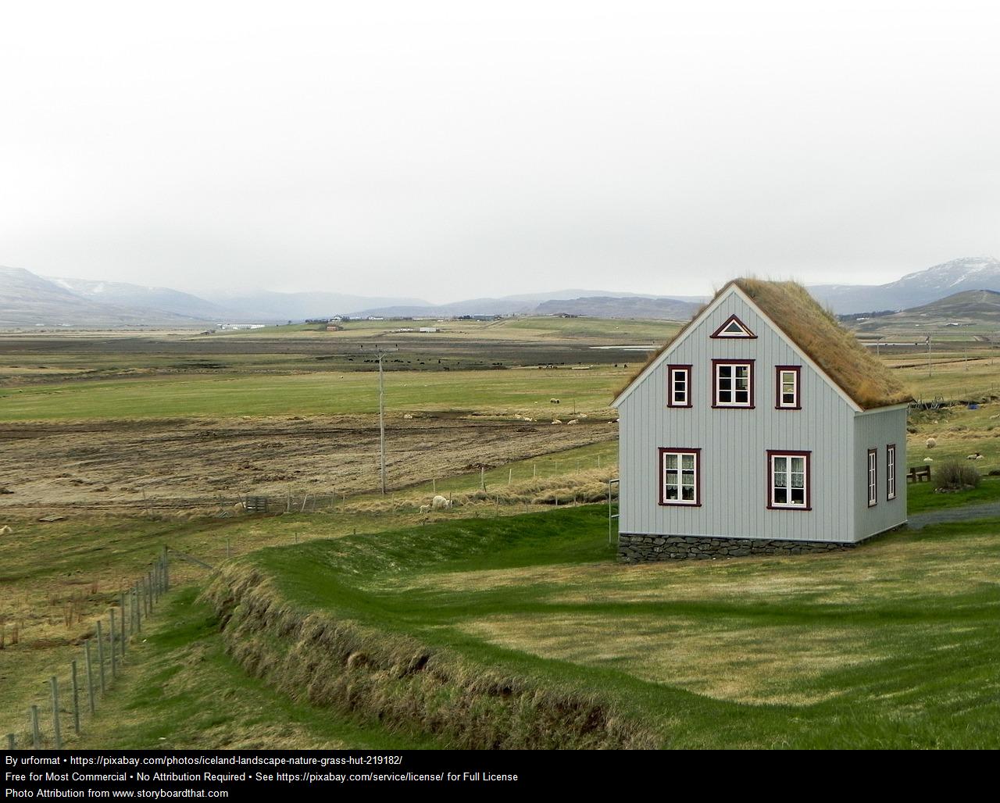
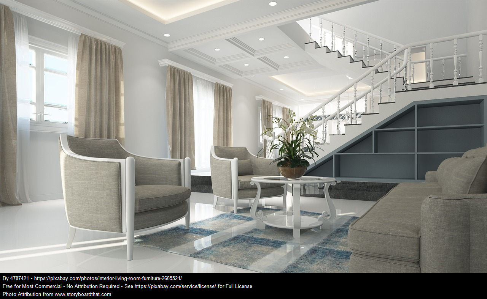
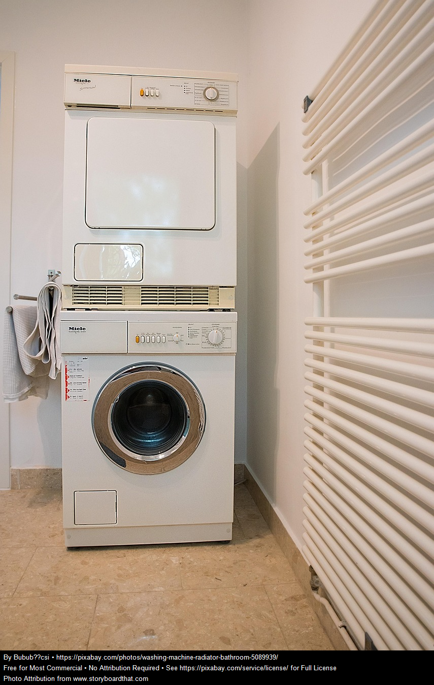
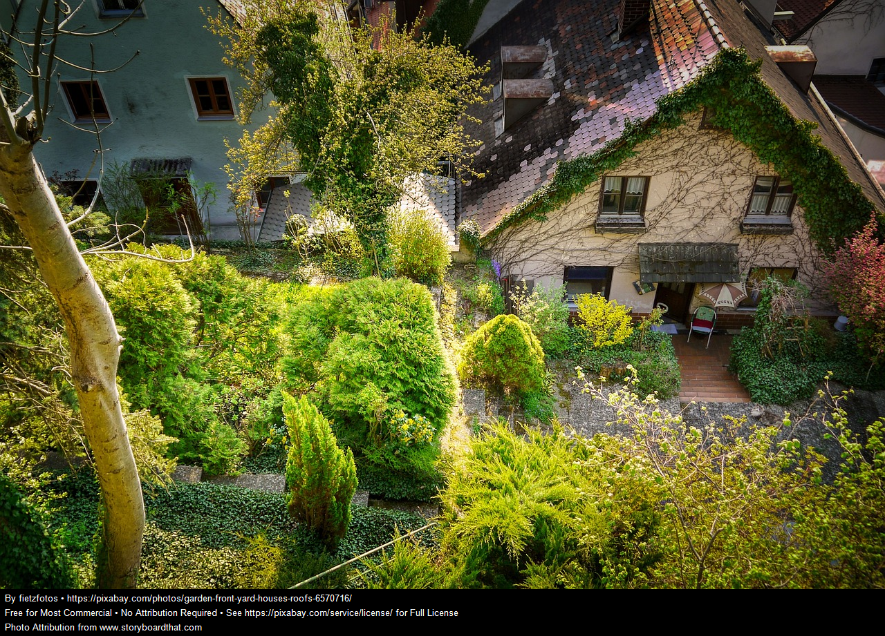
Mein Leben in der Zukunft
In der Zukunft werde ich in einer großen Stadt wohnen, aber in einer kleinen Wohnung.
Ich werde als Optometrist arbeiten und eine Katze haben.
Ich werde einen Balkon und einen kleinen Garten haben.
Meine Stadt wird in den USA sein und meine Wohnung wird modern sein.
Mein Leben wird gut sein.
Meine Musik
In meiner Freizeit höre ich gern Musik. Ich höre jeden Tag Musik in meiner Wohnung. Musik ist entspannend und macht mich glücklich. Ich höre gern Tupac, Eminem, Rihanna und Britney Spears. Mein Lieblingslied ist „Stereo Hearts“ von Gym Class Heroes. Ich spiele Ukulele.
Ich habe Rammstein gehört. Das Lied „Sonne“ ist gut, aber ich mag Rammstein nicht, weil es nicht mein Stil ist. Ich höre auch klassische Musik, zum Beispiel Beethoven und Mozart. Ich höre klassische Musik beim Lernen. Das hilft mir.
Rammstein
Rammstein ist eine deutsche Gruppe. Das Lied „Sonne“ ist gut, aber die Musik ist laut. Ich mag Rammstein nicht so gern, weil es nicht mein Stil ist.
Beethoven
Beethoven ist ein Komponist. Seine Musik ist klassisch und sehr bekannt. Ich höre klassische Musik gern beim Lernen.
Mozart
Mozart ist auch ein Komponist. Seine Musik ist ruhig und schön. Ich finde Mozart ruhiger als Rammstein.
Meine Meinung
Tupac und Eminem sind anders als klassische Musik. Britney Spears ist sehr populär. Rammstein ist lauter als Mozart und Beethoven. Mozart und Beethoven sind besser zum Lernen, weil die Musik ruhiger ist.
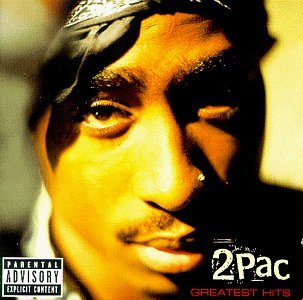
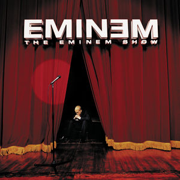
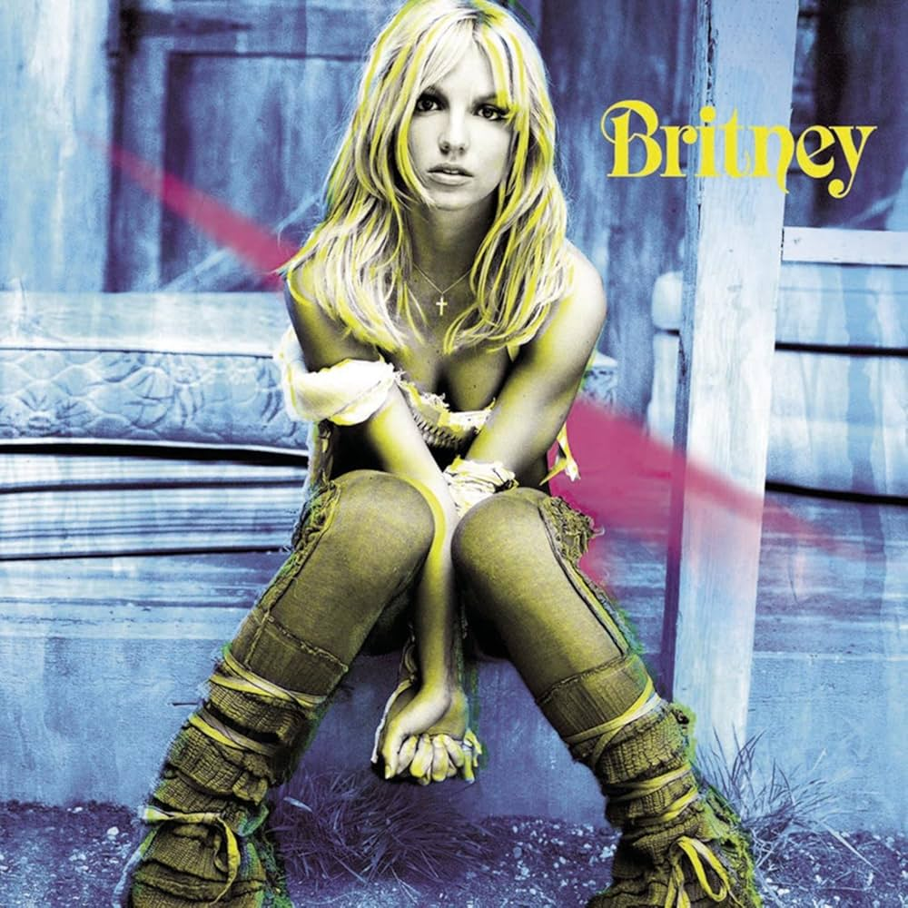
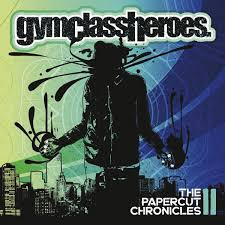
Meine Lieblingsmusik und Künstler
Meine Stadt: Graz
Ich habe Graz in Österreich besucht. Ich bin im Sommer gereist. Ich bin mit dem Flugzeug gereist. Ich bin mit Freunden gereist. In Graz gibt es viele schöne Gebäude. Die Stadt liegt an der Mur. Es gibt eine Straßenbahn und viele Fahrräder. Man kann durch die Stadt gehen und die Architektur sehen. Ich habe Backhendl und Brettljause gegessen. Ich habe die Stadt sehr interessant gefunden.
Schlossberg und Uhrturm
Man kann auf den Schlossberg gehen und den Uhrturm sehen. Von dort sieht man die Stadt von oben.
Hauptplatz
Der Hauptplatz ist im Zentrum. Man kann dort spazieren gehen und schöne Gebäude sehen.
Murinsel
Die Murinsel liegt in der Mur. Man kann dort Fotos machen und die moderne Architektur sehen.
Kunsthaus Graz
Das Kunsthaus ist ein modernes Museum. Man kann dort Kunst sehen.
Schloss Eggenberg
Schloss Eggenberg ist sehr schön. Man kann das Schloss besuchen und durch den Garten gehen.
Essen und Trinken
In Graz kann man Backhendl und Brettljause essen. Man kann auch Kaffee trinken und Apfelstrudel essen.
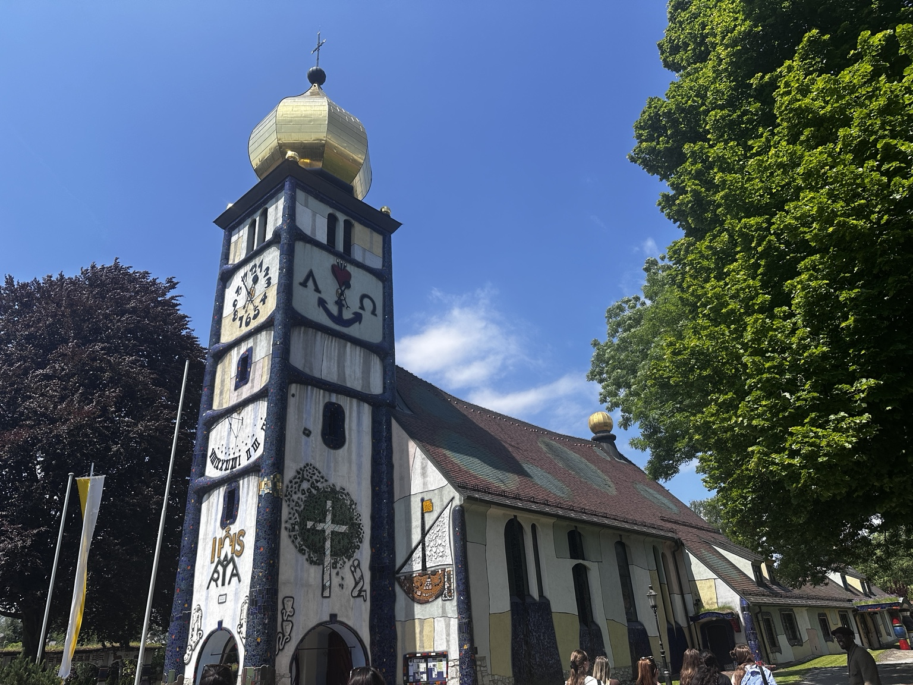
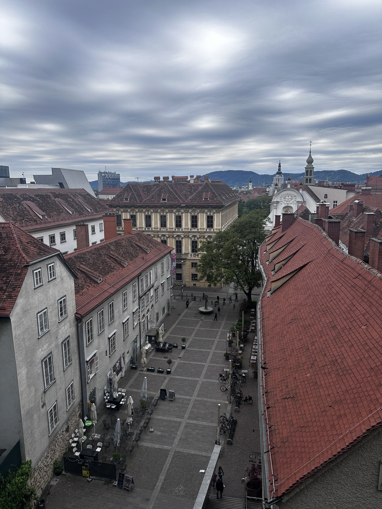
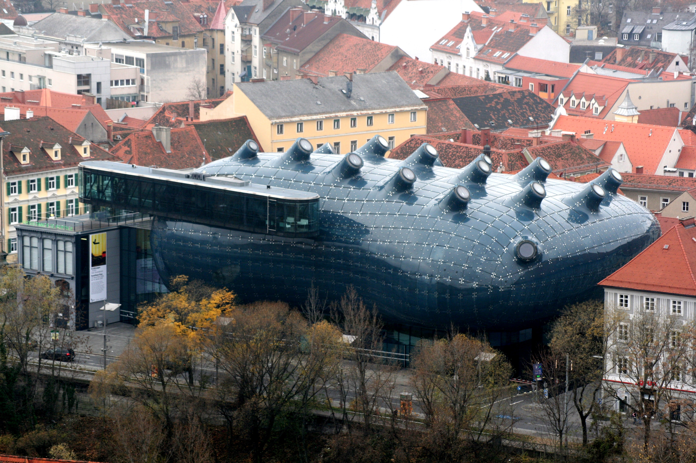
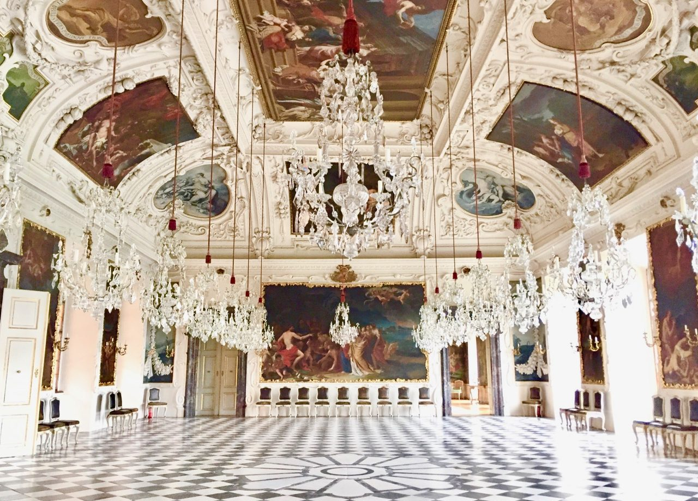
Sehenswürdigkeiten in Graz, Österreich
Sehenswürdigkeiten in Graz
Das Kunsthaus Graz ist modern und interessant. Schloss Eggenberg ist sehr groß und schön. Die Kirchen in Graz sind alt und beeindruckend.